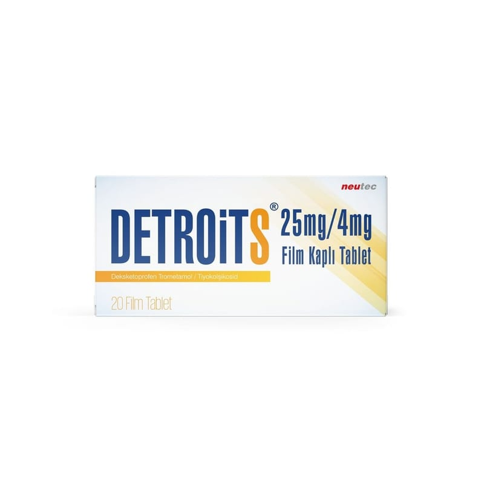

Detroits 25 mg/4 mg Film Kaplı Tablet, 20 Tablet

Ne için kullanılır
KT · Bölüm 1DETROİTS sarı renkli, yuvarlak, çentikli bikonveks film kaplı tabletler şeklindedir ve etkin madde olarak deksketoprofen ve tiyokolşikosid içerir. DETROİTS 15 ve 20 film kaplı tablet, PVC – PVDC Opak/Alüminyum folyo ambalajlarda piyasaya sunulmaktadır. DETROİTS’in içeriğindeki deksketoprofen, steroid olmayan antiinflamatuvar ilaçlar (NSAİİ) olarak adlandırılan ilaç grubundan bir ağrı kesicidir. DETROİTS’in içeriğindeki tiyokolşikosid esas olarak kas gevşetici etkinliğe sahiptir. Tiyokolşikosid, ağrılı kas spazmlarının semptomatik tedavisi amacıyla kullanılır. DETROİTS osteoartrit (kireçlenme), vertebral kolonun (omurganın) ağrılı sendromları, eklem dışı romatizma, ağrılı kas kasılmalarının semptomatik tedavisinde, travma ve ameliyat sonrası oluşan ağrının tedavisinde kullanılır.